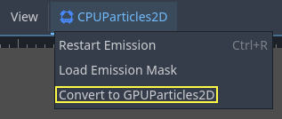
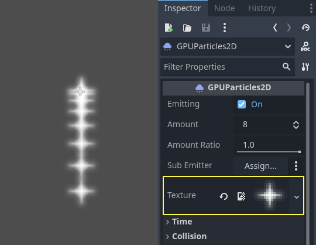
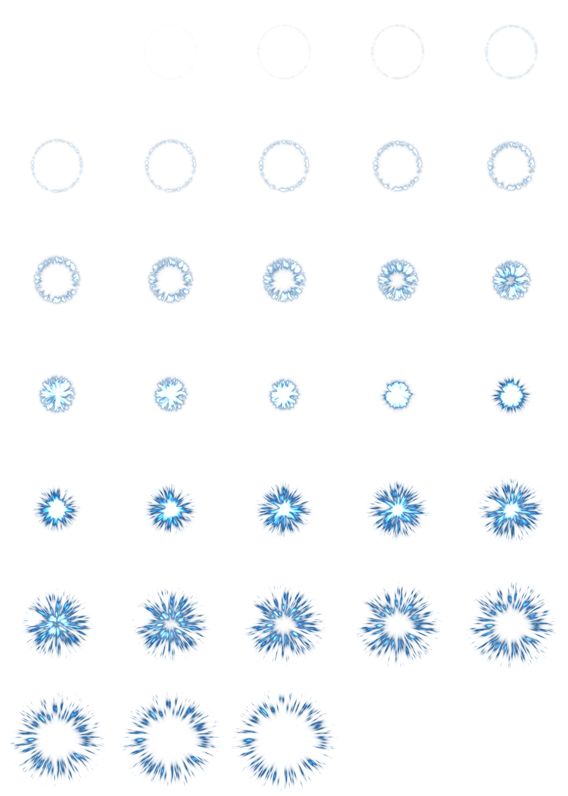
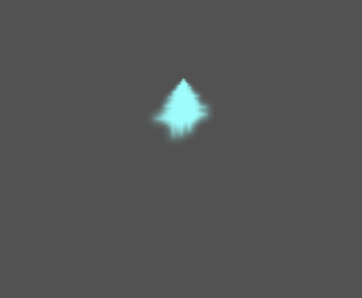

Work in progress
The content of this page was not yet updated for Godot
4.7
and may be outdated. If you know how to improve this page or you can confirm
that it's up to date, feel free to open a pull request.
2D particle systems
Intro
Particle systems are used to simulate complex physical effects, such as sparks, fire, magic particles, smoke, mist, etc.
The idea is that a "particle" is emitted at a fixed interval and with a fixed lifetime. During its lifetime, every particle will have the same base behavior. What makes each particle different from the rest and provides a more organic look is the "randomness" associated with each parameter. In essence, creating a particle system means setting base physics parameters and then adding randomness to them.
Particle nodes
Godot provides two different nodes for 2D particles, GPUParticles2D and CPUParticles2D. GPUParticles2D is more advanced and uses the GPU to process particle effects. CPUParticles2D is a CPU-driven option with near-feature parity with GPUParticles2D, but lower performance when using large amounts of particles. On the other hand, CPUParticles2D may perform better on low-end systems or in GPU-bottlenecked situations.
While GPUParticles2D is configured via a ParticleProcessMaterial (and optionally with a custom shader), the matching options are provided via node properties in CPUParticles2D (with the exception of the trail settings).
Going forward there are no plans to add new features to CPUParticles2D, though pull requests to add features already in GPUParticles2D will be accepted. For that reason we recommend using GPUParticles2D unless you have an explicit reason not to.
You can convert a CPUParticles2D node into a GPUParticles2D node by clicking on the node in the scene tree, selecting the 2D workspace, and selecting CPUParticles2D > Convert to GPUParticles2D in the toolbar.

It is also possible to convert a GPUParticles2D node to a CPUParticles2D node, however there may be issues if you use GPU-only features.
The rest of this tutorial is going to use the GPUParticles2D node. First, add a GPUParticles2D node to your scene. After creating that node you will notice that only a white dot was created, and that there is a warning icon next to your GPUParticles2D node in the scene dock. This is because the node needs a ParticleProcessMaterial to function.
ParticleProcessMaterial
To add a process material to your particles node, go to Process Material in
your inspector panel. Click on the box next to Material, and from the dropdown
menu select New ParticleProcessMaterial.

Your GPUParticles2D node should now be emitting white points downward.

Texture
A particle system can use a single texture or an animation flipbook. A flipbook is a texture that contains several frames of animation that can be played back, or chosen at random during emission. This is equivalent to a spritesheet for particles.
The texture is set via the Texture property:

Using an animation flipbook
Particle flipbooks are suited to reproduce complex effects such as smoke, fire, explosions. They can also be used to introduce random texture variation, by making every particle use a different texture. You can find existing particle flipbook images online, or pre-render them using external tools such as Blender or EmberGen.

Example of a particle system that uses a flipbook texture
Using an animation flipbook requires additional configuration compared to a single texture. For demonstration purposes, we'll use this texture with 5 columns and 7 rows (right-click and choose Save as…):


Credit: JoesAlotofthings (CC BY 4.0)
To use an animation flipbook, you must create a new CanvasItemMaterial in the Material section of the GPUParticles2D (or CPUParticles2D) node:

Creating a CanvasItemMaterial at the bottom of the particles node inspector
In this CanvasItemMaterial, enable Particle Animation and set H Frames and V Frames to the number of columns and rows present in your flipbook texture:

Configuring the CanvasItemMaterial for the example flipbook texture
Once this is done, the Animation section in ParticleProcessMaterial (for GPUParticles2D) or in the CPUParticles2D inspector will be effective.
Tip
If your flipbook texture has a black background instead of a transparent background, you will also need to set the blend mode to Add instead of Mix for correct display. Alternatively, you can modify the texture to have a transparent background in an image editor. In GIMP, this can be done using the Color > Color to Alpha menu.
Time parameters
Lifetime
The time in seconds that every particle will stay alive. When lifetime ends, a new particle is created to replace it.
Lifetime: 0.5

Lifetime: 4.0

One Shot
When enabled, a GPUParticles2D node will emit all of its particles once and then never again.
Preprocess
Particle systems begin with zero particles emitted, then start emitting. This can be an inconvenience when loading a scene and systems like a torch, mist, etc. begin emitting the moment you enter. Preprocess is used to let the system process a given number of seconds before it is actually drawn the first time.
Speed Scale
The speed scale has a default value of 1 and is used to adjust the
speed of a particle system. Lowering the value will make the particles
slower while increasing the value will make the particles much faster.
Explosiveness
If lifetime is 1 and there are 10 particles, it means a particle
will be emitted every 0.1 seconds. The explosiveness parameter changes
this, and forces particles to be emitted all together. Ranges are:
0: Emit particles at regular intervals (default value).
1: Emit all particles simultaneously.
Values in the middle are also allowed. This feature is useful for creating explosions or sudden bursts of particles:

Randomness
All physics parameters can be randomized. Random values range from 0 to
1. The formula to randomize a parameter is:
initial_value = param_value + param_value * randomness
Fixed FPS
This setting can be used to set the particle system to render at a fixed
FPS. For instance, changing the value to 2 will make the particles render
at 2 frames per second. Note this does not slow down the particle system itself.
Note
Godot 4.3 does not currently support physics interpolation for 2D particles. As a workaround, disable physics interpolation for the particles node by setting Node > Physics Interpolation > Mode at the bottom of the inspector.
Fract Delta
Setting Fract Delta to true results in fractional delta calculation,
which has a smoother particles display effect.
This increased smoothness stems from higher accuracy.
The difference is more noticeable in systems with high randomness or fast-moving particles.
It helps maintain the visual consistency of the particle system,
making sure that each particle's motion aligns with its actual lifespan.
Without it, particles might appear to jump or move more than they should in a single frame
if they are emitted at a point within the frame.
The greater accuracy has a performance tradeoff,
particularly in systems with a higher amount of particles.
Drawing parameters
Visibility Rect
The visibility rectangle controls the visibility of the particles on screen. If this rectangle is outside of the viewport, the engine will not render the particles on screen.
The rectangle's W and H properties respectively control its Width and its Height.
The X and Y properties control the position of the upper-left
corner of the rectangle, relative to the particle emitter.
You can have Godot generate a Visibility Rect automatically using the toolbar above the 2d view. To do so, select the GPUParticles2D node and Click Particles > Generate Visibility Rect. Godot will simulate the Particles2D node emitting particles for a few seconds and set the rectangle to fit the surface the particles take.
You can control the emit duration with the Generation Time (sec) option. The maximum value is 25 seconds. If you need more time for your particles to move around, you can temporarily change the preprocess duration on the Particles2D node.
Local Coords
By default, this option is off. It means that the space that particles are emitted to is global, and not relative to the node. If the node is moved, existing particles are not moved with it:

If enabled, particles will emit to local space, meaning that if the node is moved, already emitted particles are also affected:

Draw Order
This controls the order in which individual particles are drawn. Index
means particles are drawn according to their emission order (default).
Lifetime means they are drawn in order of remaining lifetime.
Particle Process Material Settings
For information on the settings in the ParticleProcessMaterial see this page.